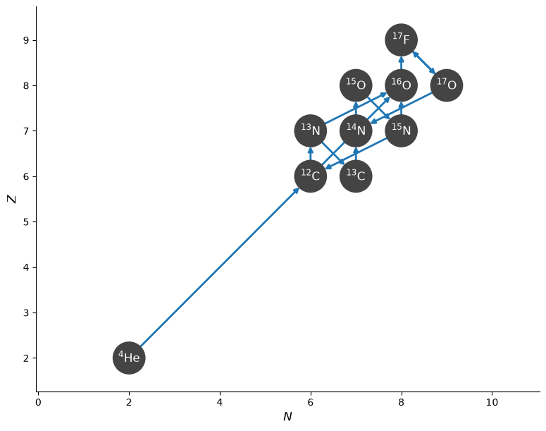
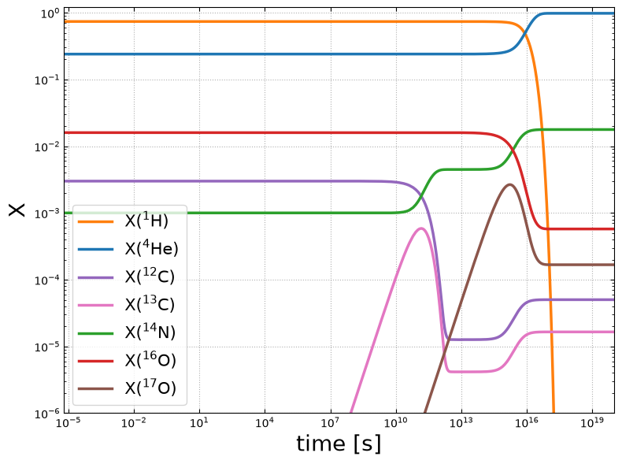
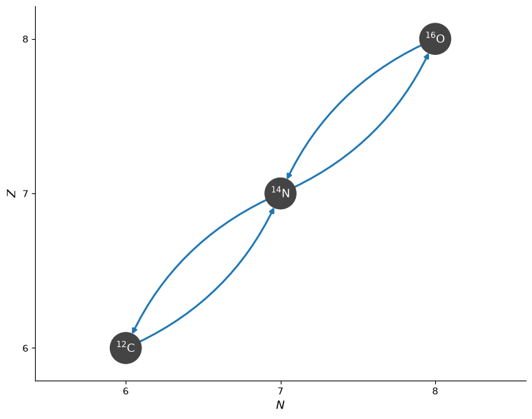
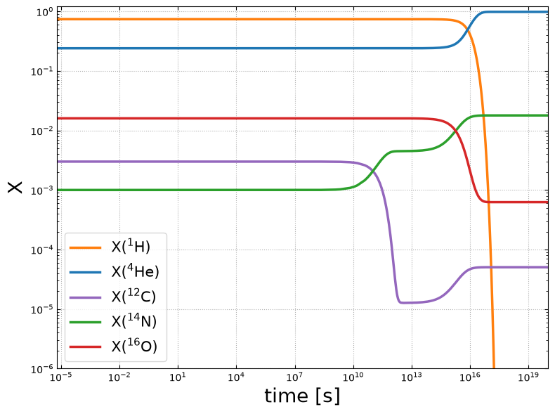
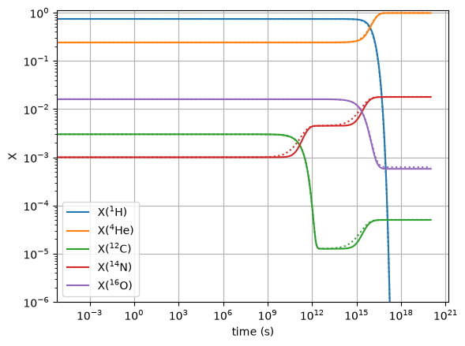

BranchedRate#
Consider the CNO cycle:
To represent this in a network, we would need 6 nuclei. For approximate networks used for stellar evolution, we often want fewer nuclei.
The MESA basic.net network represents this using only 2
nuclei, by breaking it into 2 sequences:
We can represent the first sequence using ModifiedRate, using the first rate of the sequence as the overall rate, and giving:
For the second sequence however, we have a problem that there is another branch,
So we need to approximate this as well. We can do this with a BranchedRate.
A BranchedRate takes a rate to use as the underlying rate for the sequence, \({}^{14}\mathrm{N}(p,\gamma){}^{15}\mathrm{O}\) in our case, as well as the rates representing the different branches for the endpoint.
Expressing the values of these rates as:
underlying rate: \(\lambda_{{}^{14}\mathrm{N}(p,\gamma){}^{15}\mathrm{O}}\)
branch I: \(\lambda_{{}^{15}\mathrm{N}(p,\alpha){}^{12}\mathrm{C}}\)
branch II: \(\lambda_{{}^{15}\mathrm{N}(p,\gamma){}^{16}\mathrm{O}}\)
then we can express the effective rates for the two sequences as:
branch I: \({}^{14}\mathrm{N}(p,\gamma){}^{15}\mathrm{O}(,e^+\nu){}^{15}\mathrm{N}(p,\alpha){}^{12}\mathrm{C}\)
\[\lambda_{{}^{14}\mathrm{N}(pp,e^+\nu\alpha){}^{12}\mathrm{C}} = \lambda_{{}^{14}\mathrm{N}(p,\gamma){}^{15}\mathrm{O}} \frac{\lambda_{{}^{15}\mathrm{N}(p,\alpha){}^{12}\mathrm{C}}}{\lambda_{{}^{15}\mathrm{N}(p,\alpha){}^{12}\mathrm{C}} + \lambda_{{}^{15}\mathrm{N}(p,\gamma){}^{16}\mathrm{O}}}\]branch II: \({}^{14}\mathrm{N}(p,\gamma){}^{15}\mathrm{O}(,e^+\nu){}^{15}\mathrm{N}(p,\gamma){}^{16}\mathrm{O}\)
\[\lambda_{{}^{14}\mathrm{N}(pp,e^+\nu){}^{16}\mathrm{O}} = \lambda_{{}^{14}\mathrm{N}(p,\gamma){}^{15}\mathrm{O}} \frac{\lambda_{{}^{15}\mathrm{N}(p,\gamma){}^{16}\mathrm{O}}}{\lambda_{{}^{15}\mathrm{N}(p,\alpha){}^{12}\mathrm{C}} + \lambda_{{}^{15}\mathrm{N}(p,\gamma){}^{16}\mathrm{O}}}\]
where each branched is normalized by its branching ratio. This is what a BranchedRate will do automatically for us.
To complete this chain, we should also include
which we can do using a ModifiedRate
Reference CNO network#
We’ll start by making a CNO network with all nuclei present (as well as \({}^{16}\mathrm{O}\) and the nuclei involved in \({}^{16}\mathrm{O}(p,\gamma){}^{17}\mathrm{F}(,e^+,\nu){}^{17}\mathrm{O}(p,\alpha){}^{14}\mathrm{N}\))
import pynucastro as pyna
from pynucastro import Nucleus
net = pyna.network_helper(["p", "he4", "c12", "c13", "n13", "n14", "n15",
"o15", "o16", "o17", "f17"],
tabular_ordering=["ffn", "oda"],
with_reverse=False)
fig = net.plot()

We see that this also has \({}^{12}\mathrm{C}(\alpha, \gamma){}^{16}\mathrm{O}\) and 3-\(\alpha\), but we will work at temperatures where we don’t expect these to be dominant.
net.summary()
Network summary
---------------
explicitly carried nuclei: 11
approximated-out nuclei: 0
inert nuclei (included in carried): 0
NSE compatible? False
total number of rates: 14
rates explicitly connecting nuclei: 14
hidden rates: 0
reaclib rates: 12
starlib rates: 0
temperature tabular rates: 0
weak tabular rates: 2
approximate rates: 0
derived rates: 0
branched rates: 0
modified rates: 0
custom rates: 0
Now we can integrate it.
rho = 100
T = 2.e7
We’ll set the composition ourselves, so we start with the same initial conditions with the full and reduced networks. This is roughly solar for the reduced composition
comp = pyna.Composition(net.unique_nuclei, small=0.0)
comp[Nucleus("p")] = 0.74
comp[Nucleus("he4")] = 0.24
comp[Nucleus("c12")] = 0.003
comp[Nucleus("n14")] = 0.001
comp[Nucleus("o16")] = 0.016
tmax = 1.e20
sol = net.integrate_network(tmax, rho, T, comp)
fig = sol.plot_evolution(ymin=1.e-6)
/opt/hostedtoolcache/Python/3.14.7/x64/lib/python3.14/site-packages/pynucastro/networks/python_network.py:496: UserWarning: Attempt to set non-positive xlim on a log-scaled axis will be ignored.
ax.set_xlim(tmin, tmax)

Reduced network#
Now we’ll setup a reduced CNO network using the approximations described above.
rl = pyna.ReacLibLibrary()
rc12pg = rl.get_rate_by_name("c12(p,g)n13")
rn14pg = rl.get_rate_by_name("n14(p,g)o15")
rn15pa = rl.get_rate_by_name("n15(p,a)c12")
rn15pg = rl.get_rate_by_name("n15(p,g)o16")
ro16pg = rl.get_rate_by_name("o16(p,g)f17")
\({}^{12}\mathrm{C} + 2 p \rightarrow {}^{14}\mathrm{N}\)#
Our first rate sequence will be approximated as a ModifiedRate
rc12_2p_n14 = pyna.ModifiedRate(rc12pg,
new_products=[Nucleus("n14")],
stoichiometry={Nucleus("p"): 2})
rc12_2p_n14
C12 + p + p ⟶ N14 + e⁺ + 𝜈
\({}^{14}\mathrm{N} + 2 p\) branches#
When we construct a BranchedRate, we need to specify
the underlying rate (assumed to be the first in the sequence), the branch we are taking (primary_branch)
and the other possible branch (other_branch).
If there are more reactants in the sequence than given in the first rate, then we need to specify the stoichiometry.
rn14_2p_c12 = pyna.BranchedRate(rn14pg,
primary_branch=rn15pa,
other_branch=rn15pg,
stoichiometry={Nucleus("p"): 2},
description="N14(p,g)O15(,e+nu)N15(p,a)C12")
rn14_2p_c12
N14 + p + p ⟶ He4 + C12 + e⁺ + 𝜈
Also notice that it is recognized as being a weak reaction:
rn14_2p_c12.weak
True
Now we can look at the function that will be used to evaluate this rate:
print(rn14_2p_c12.function_string_py())
@numba.njit()
def N14_p_p_to_He4_C12_beta_pos_branched(rate_eval, tf, log_scor=0.0):
# N14 + p + p --> He4 + C12
# represents the sequence: N14(p,g)O15(,e+nu)N15(p,a)C12
r0 = rate_eval.N14_p_to_O15_reaclib
r_prim_br = rate_eval.N15_p_to_He4_C12_reaclib
r_other_br = rate_eval.N15_p_to_O16_reaclib
f = r_prim_br / (r_prim_br + r_other_br)
rate_eval.N14_p_p_to_He4_C12_beta_pos_branched = f * r0
We see that, as desired, the rate is taken to be the underlying rate modified by the branching ratio represented by the primary branch.
Now let’s do the alternate branch:
rn14_2p_o16 = pyna.BranchedRate(rn14pg,
primary_branch=rn15pg,
other_branch=rn15pa,
stoichiometry={Nucleus("p"): 2},
description="N14(p,g)O15(,e+nu)N15(p,g)O16")
rn14_2p_o16
N14 + p + p ⟶ O16 + e⁺ + 𝜈
\({}^{16}\mathrm{O} + 2 p \rightarrow {}^{14}\mathrm{N} + \alpha\)#
ro16_2p_n14_a = pyna.ModifiedRate(ro16pg,
new_products=[Nucleus("n14"),
Nucleus("he4")],
stoichiometry={Nucleus("p"): 2})
ro16_2p_n14_a
O16 + p + p ⟶ N14 + He4 + e⁺ + 𝜈
Now we can create a network.
net_reduced = pyna.PythonNetwork(rates=[rc12_2p_n14,
rn14_2p_c12,
rn14_2p_o16,
ro16_2p_n14_a])
net_reduced.get_rates()
[C12 + p + p ⟶ N14 + e⁺ + 𝜈,
N14 + p + p ⟶ He4 + C12 + e⁺ + 𝜈,
N14 + p + p ⟶ O16 + e⁺ + 𝜈,
O16 + p + p ⟶ N14 + He4 + e⁺ + 𝜈]
net_reduced.summary()
Network summary
---------------
explicitly carried nuclei: 5
approximated-out nuclei: 0
inert nuclei (included in carried): 0
NSE compatible? False
total number of rates: 9
rates explicitly connecting nuclei: 4
hidden rates: 5
reaclib rates: 5
starlib rates: 0
temperature tabular rates: 0
weak tabular rates: 0
approximate rates: 0
derived rates: 0
branched rates: 2
modified rates: 2
custom rates: 0
fig = net_reduced.plot(curved_edges=True)

Now we’ll integrate it. We need a new composition for this because there is a different set of nuclei
comp_reduced = pyna.Composition(net_reduced.unique_nuclei, small=0.0)
comp_reduced[Nucleus("p")] = 0.74
comp_reduced[Nucleus("he4")] = 0.24
comp_reduced[Nucleus("c12")] = 0.003
comp_reduced[Nucleus("n14")] = 0.001
comp_reduced[Nucleus("o16")] = 0.016
sol_reduced = net_reduced.integrate_network(tmax, rho, T, comp_reduced)
fig = sol_reduced.plot_evolution(ymin=1.e-6)
/opt/hostedtoolcache/Python/3.14.7/x64/lib/python3.14/site-packages/pynucastro/networks/python_network.py:496: UserWarning: Attempt to set non-positive xlim on a log-scaled axis will be ignored.
ax.set_xlim(tmin, tmax)

We can see what the righthand side function looks like by writing it out and importing it
net_reduced.write_network("reduced.py")
import reduced
import inspect
print(inspect.getsource(reduced.ydot_eq))
@numba.njit()
def ydot_eq(Y, rho, rate_eval):
dYdt = np.zeros((nnuc), dtype=np.float64)
dYdt[jp] = (
+ -2*rho*Y[jp]*Y[jc12]*rate_eval.C12_p_p_to_N14_beta_pos_modified +
+ -2*rho*Y[jp]*Y[jn14]*rate_eval.N14_p_p_to_He4_C12_beta_pos_branched +
+ -2*rho*Y[jp]*Y[jn14]*rate_eval.N14_p_p_to_O16_beta_pos_branched +
+ -2*rho*Y[jp]*Y[jo16]*rate_eval.O16_p_p_to_N14_He4_beta_pos_modified
)
dYdt[jhe4] = (
+rho*Y[jp]*Y[jn14]*rate_eval.N14_p_p_to_He4_C12_beta_pos_branched +
+rho*Y[jp]*Y[jo16]*rate_eval.O16_p_p_to_N14_He4_beta_pos_modified
)
dYdt[jc12] = (
-rho*Y[jp]*Y[jc12]*rate_eval.C12_p_p_to_N14_beta_pos_modified +
+rho*Y[jp]*Y[jn14]*rate_eval.N14_p_p_to_He4_C12_beta_pos_branched
)
dYdt[jn14] = (
+rho*Y[jp]*Y[jc12]*rate_eval.C12_p_p_to_N14_beta_pos_modified +
-rho*Y[jp]*Y[jn14]*rate_eval.N14_p_p_to_He4_C12_beta_pos_branched +
-rho*Y[jp]*Y[jn14]*rate_eval.N14_p_p_to_O16_beta_pos_branched +
+rho*Y[jp]*Y[jo16]*rate_eval.O16_p_p_to_N14_He4_beta_pos_modified
)
dYdt[jo16] = (
+rho*Y[jp]*Y[jn14]*rate_eval.N14_p_p_to_O16_beta_pos_branched +
-rho*Y[jp]*Y[jo16]*rate_eval.O16_p_p_to_N14_He4_beta_pos_modified
)
return dYdt
Looking at the evolution for \({}^{14}\mathrm{N}\) (dYdt[jn14]), we see that \({}^{14}\mathrm{N}\) is consumed by both branched rates. And we see the corresponding creation in the \({}^4\mathrm{He}\), \({}^{12}\mathrm{C}\), and \({}^{16}\mathrm{O}\) evolution equations.
Similarly, if we look at protons (dYdt[jp]) we see that 2 protons are consumed for each branched rate, but the rate depends on Y[jp] and not Y[jp]**2. This is the desired dependence—it is not a three body reaction.
Comparison#
Now we can compare the reduced CNO approximation to the network integration with the full CNO
import matplotlib.pyplot as plt
fig, ax = plt.subplots()
for i, nuc in enumerate(sol_reduced.unique_nuclei):
ax.loglog(sol_reduced.t, sol_reduced.X[i, :],
linestyle=":", color=f"C{i}")
idx = sol.unique_nuclei.index(nuc)
ax.loglog(sol.t, sol.X[idx, :],
label=rf"X$({nuc.pretty})$",
linestyle="-", color=f"C{i}")
ax.set_ylim(1.e-6, 1.1)
ax.set_xlabel("time (s)")
ax.set_ylabel("X")
ax.legend()
ax.grid()

Here we see that the overall trends are very close, with only small deviations in the \({}^{14}\mathrm{N}\) and \({}^{12}\mathrm{C}\) abundances.